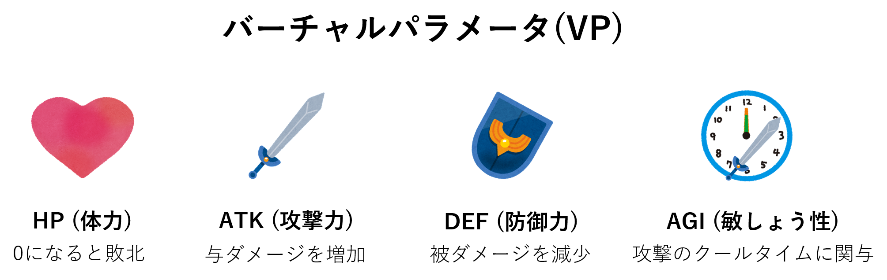
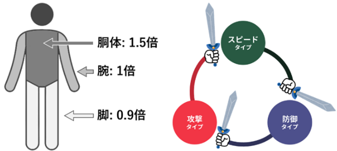

Parabladeは，剣を振って戦う既存のチャンバラ競技（スポーツチャンバラ，SASSEN）にゲーム技術を組み合わせて拡張した，新しい形の競技である．従来のチャンバラは，瞬発力や素早い動作が求められるため，身体能力差が生じやすく，異なるレベルのプレイヤーが公平に楽しむことが難しい．そこで，本研究では，RPGゲームで馴染み深い，「HP」「攻撃力」といったパラメータをプレイヤーに付与し，そのパラメータの多寡によって，身体能力の仮想的な調整を可能とする．これにより，身体能力の高低に関わらず，誰もが楽しめる競技の実現が期待される．
Augmented Sports
Augmented Sportsとは，既存の物理的なスポーツにバーチャルパラメータ（VP）を組み合わせた，新しい形態のスポーツである．VPとは，プレイヤの各種能力（体力（HP），攻撃力（ATK），防御力（DEF）など）を示す数値であり，既存のビデオゲーム等において広く使用されている． Augmented SportsではこれらVPを適切に活用することで，VPの多寡を通じてそのプレイヤの強弱を調整し，生来の運動能力の高低に関わらず誰もが楽しめるスポーツの実現を目指している．たとえば身体的に弱いプレイヤであっても，VPにより高いHPやATKを付与することで，バーチャルなプレイ能力の強化が可能となり，身体的に強いプレイヤとの対等な試合の実現が可能になる，という効果が期待できる．
ゲームデザイン

ParabladeのVPは，体力，攻撃力，防御力，素早さの4種類で構成される．
身体の攻撃は，致命傷を負いやすい箇所ほど高いダメージ倍率（下図左）が設定されており，真剣の実戦をイメージした試合を行うことができる．プレイヤーは，まず上記のVPを自由に調整し，各々に合った身体拡張を可能とする．また，調整後のVPに応じて，攻撃，防御，スピード，バランスタイプから1つが割り当てられる．この内バランスタイプ以外の3タイプ間では3すくみ（下図右）が構成されており，一方のプレイヤーがVPの一要素を最大化した場合に，いかなる手段を講じても相手プレイヤーが必ず敗北してしまう状況を防ぐ．これにより，どのVPを選択しても楽しめるようなゲーム設計を狙う．
